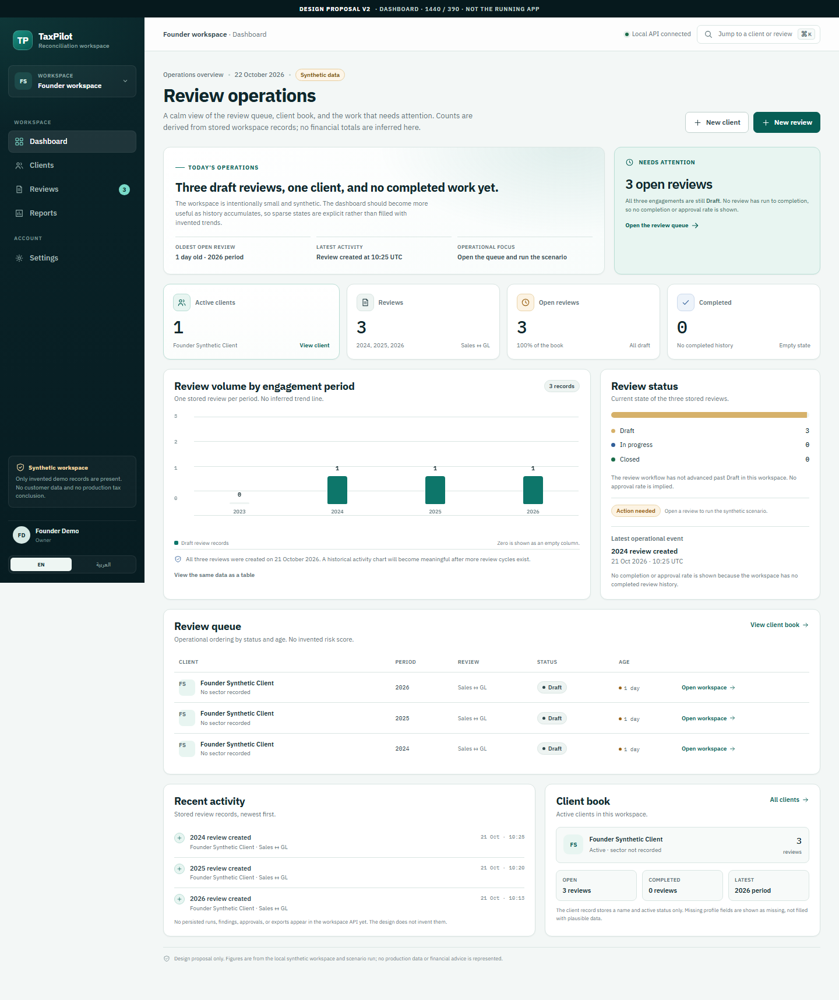
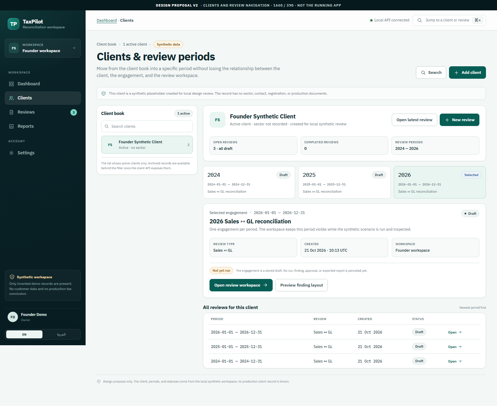
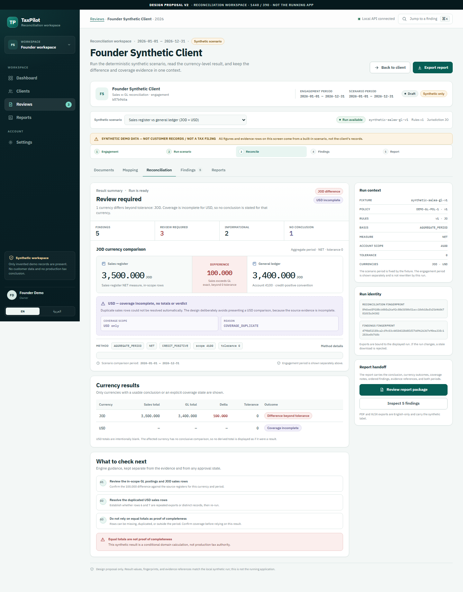
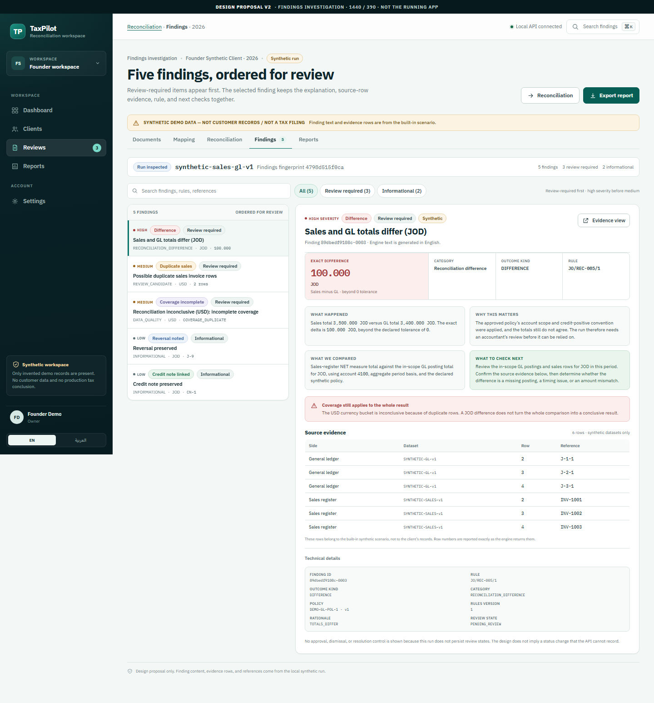
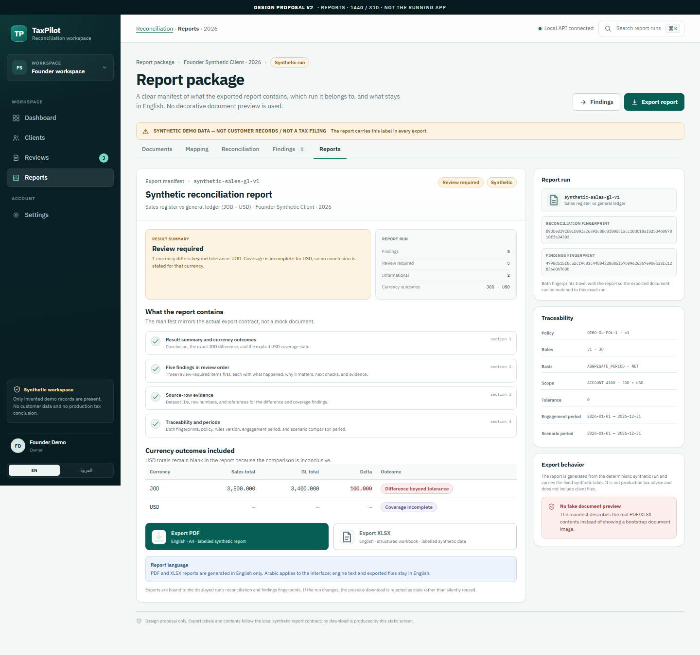
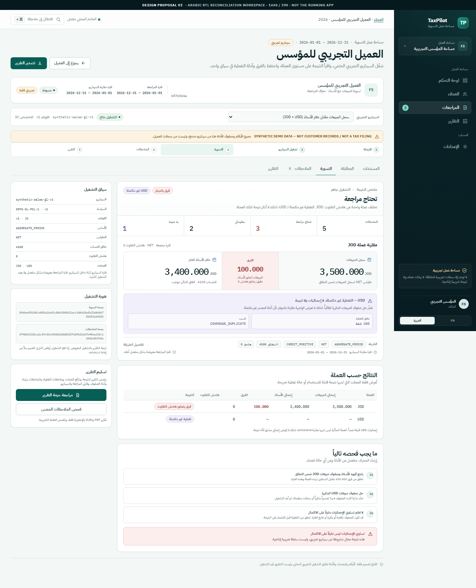

01Operations
Dashboard
A calm operations home for one client and three draft reviews. Sparse history is stated explicitly instead of being filled with invented trends.
Six static screens built from the current TaxPilot contracts and a real local synthetic run. The proposal is intentionally held at the design gate: no production UI rewrite starts until the founder and GPT-6 accept the direction.

A calm operations home for one client and three draft reviews. Sparse history is stated explicitly instead of being filled with invented trends.

Moves from the client book into a specific engagement period without losing the relationship between client, review, and workspace.

The JOD difference and USD coverage failure stay in one context, with the exact run identity, method, and separate engagement and scenario periods.

Review-required findings lead. The selected item keeps explanation, source evidence, rule metadata, and next checks together without fake approval controls.

A clear manifest of what PDF and XLSX exports contain, which run they belong to, and what deliberately stays in English.

The core workspace mirrored for Arabic, with translated labels, LTR-isolated amounts and fingerprints, and the English synthetic contract kept intact.